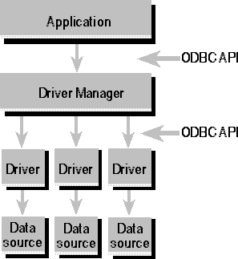

The ODBC architecture has four components:
The following figure shows the relationship between these four components.

ODBC Architecture
Note the following about this diagram. First, multiple drivers and data sources can exist, which allows the application to simultaneously access data from more than one data source. Second, the ODBC API is used in two places: between the application and the Driver Manager, and between the Driver Manager and each driver. The interface between the Driver Manager and the drivers is sometimes referred to as the service provider interface, or SPI. For ODBC, the application programming interface (API) and the service provider interface (SPI) are the same; that is, the Driver Manager and each driver have the same interface to the same functions.